Day 0｜終於到了，明日啟程
終於到了。
從台灣出發，把祝福一起帶上路
從熟悉的台灣，飛越充滿異域風情的阿布達比，最終降落浪漫之都巴黎。這幾千公里的飛行與轉機奔波，其實只為了換來明天清晨的那第一步。
出發前在桃園機場，好友們給了我一個突襲式的溫暖擁抱。那不僅是祝福，更像是把愛與思念化作重量，陪我一起打包進了行囊。
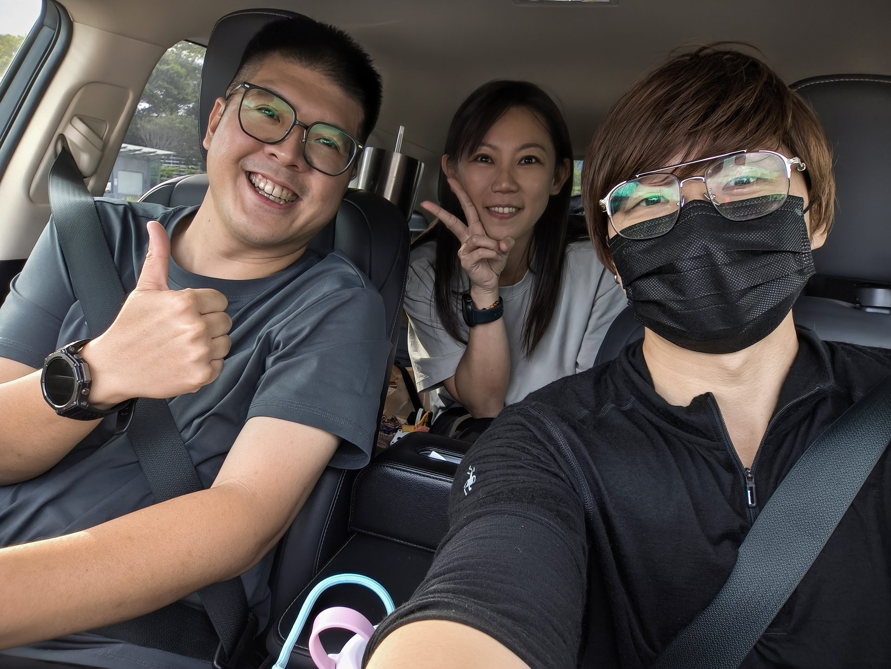
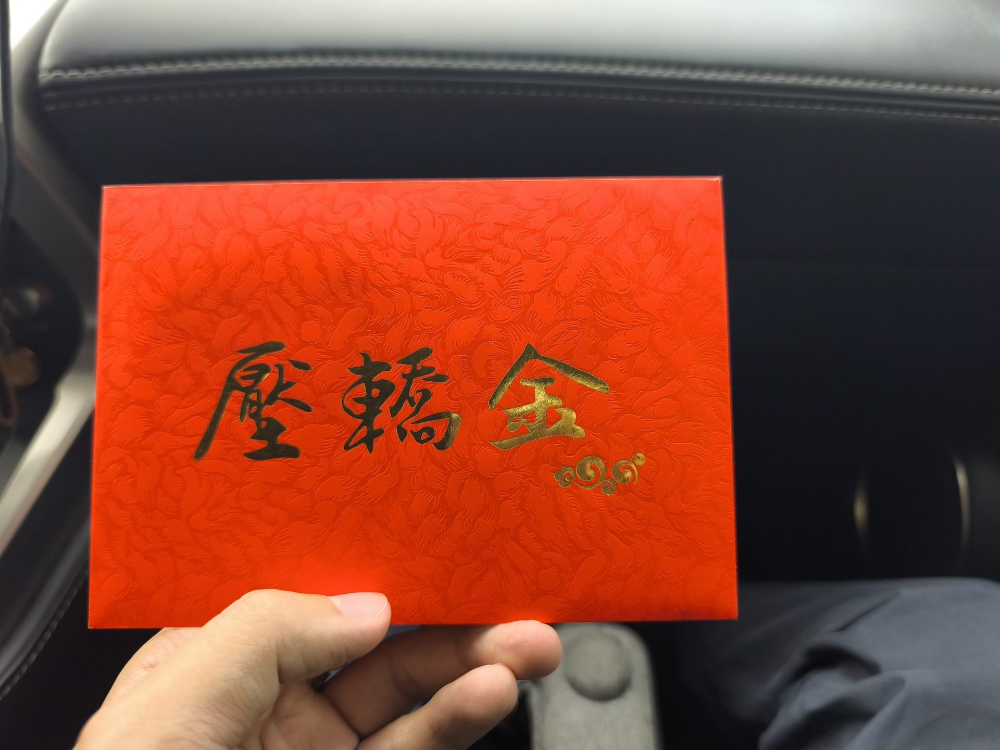
飛越歐洲，轉乘火車一路往南
阿提哈德航空的體驗出乎意料的好。地勤對隨身行李十分寬容，讓只背著背包的我鬆了一口氣。機上認識了同樣飛往巴黎的台灣朋友，甚至得知了轉機提供免費住宿的隱藏福利。但初抵異國的興奮，很快被巴黎機場漫長的出境人潮拉回現實。排了兩個小時的隊，我才真正體會到前輩們說「預留四小時」的真理。
順利與第一位夥伴 KIKI 會合後，我們搭上了固定價格 65 歐元的計程車前往市區，避開了差點被拉去搭跳表車的驚險。接著，TGV 高速列車載著我們穿越法國如詩如畫的鄉村。看著 Google 地圖上擦肩而過的羅浮宮與艾菲爾鐵塔，心裡默默記下一筆：未來若有朋友來規劃朝聖之路，真該建議他們在巴黎多留幾天。但此刻的我，坐在提早三個月搶到的單人位上，看著隔壁好奇盯著我的可愛外國小孩，遞給他一張剛印好的拍立得，看著他的笑容，反而更享受窗外的風景時更多了個回憶。
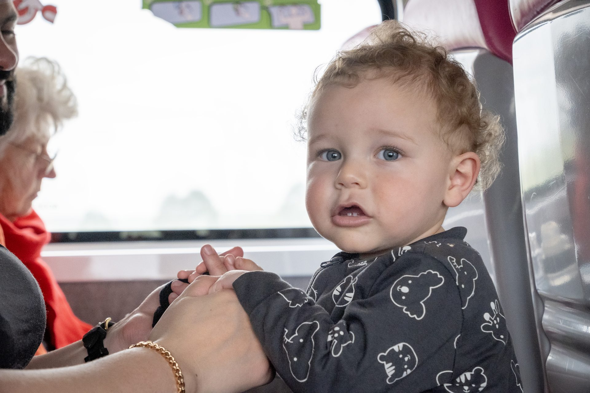
抵達 SJPP：朝聖之路真正的起點
隨著第二位夥伴 Jamie 的加入，我們來到了這趟法國之路的真正起點——聖讓皮耶德波爾（SJPP）。
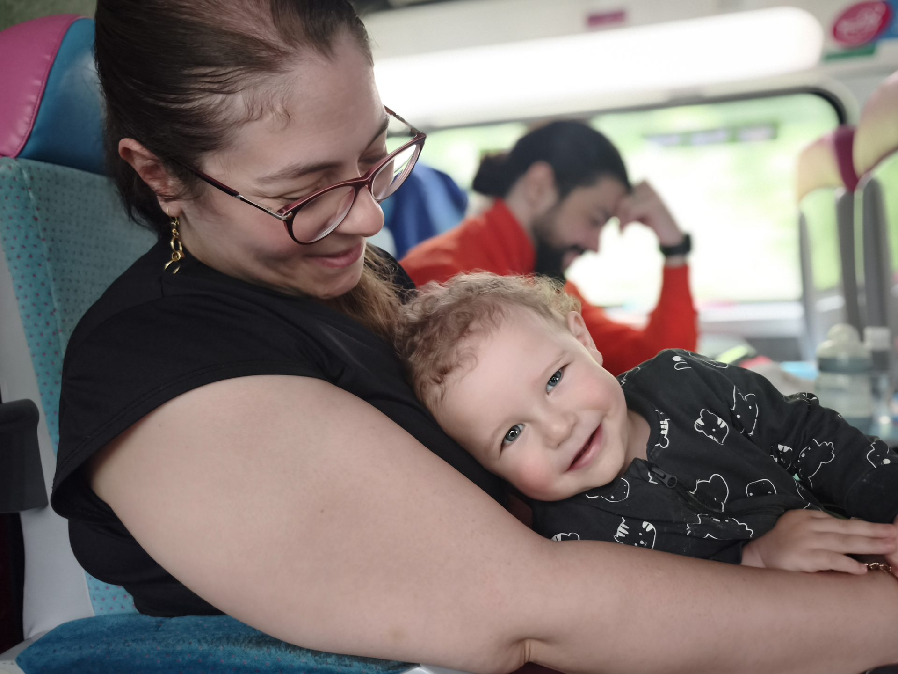
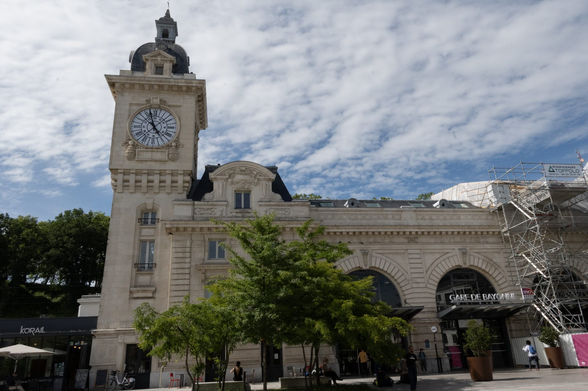
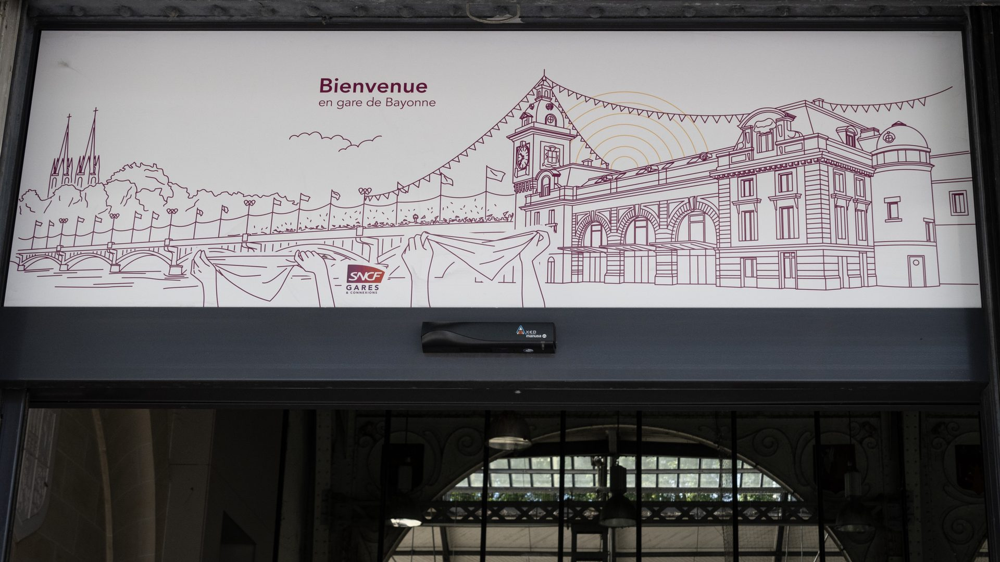
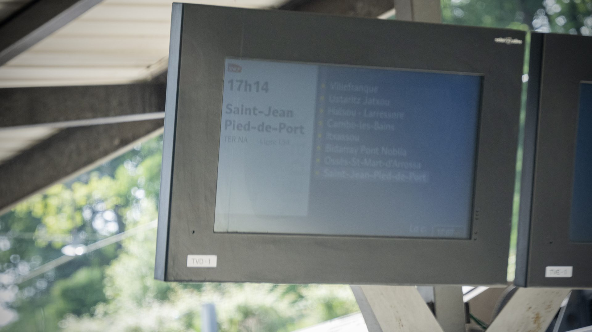
走在這座古老小鎮斑駁的石階上，來到朝聖者辦公室。當第一枚印章蓋在那份花 3 歐元買下的朝聖者護照的瞬間，心裡那種不真實感才慢慢沉澱下來。我在自由捐贈區挑選了一枚貝殼，它蒼白的紋路像無數條河流，象徵著來自世界各地的我們，帶著不同的故事，最終都要匯向同一個大海，同個目的地：聖地牙哥。
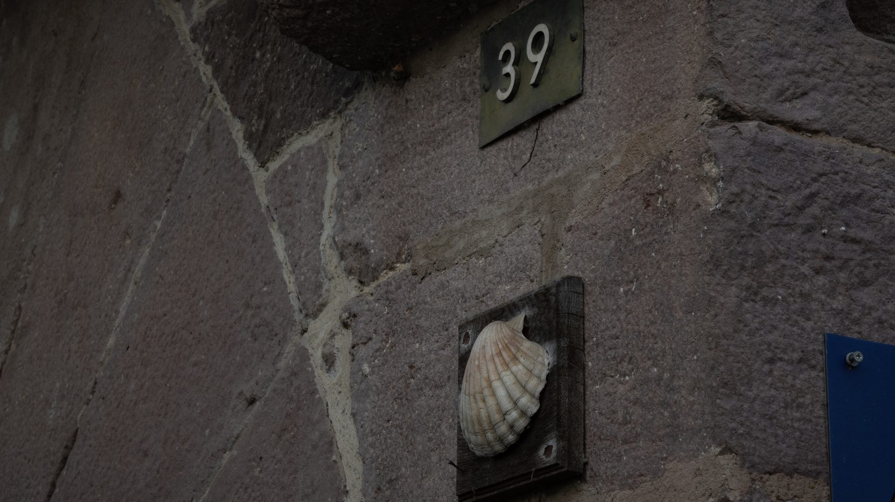
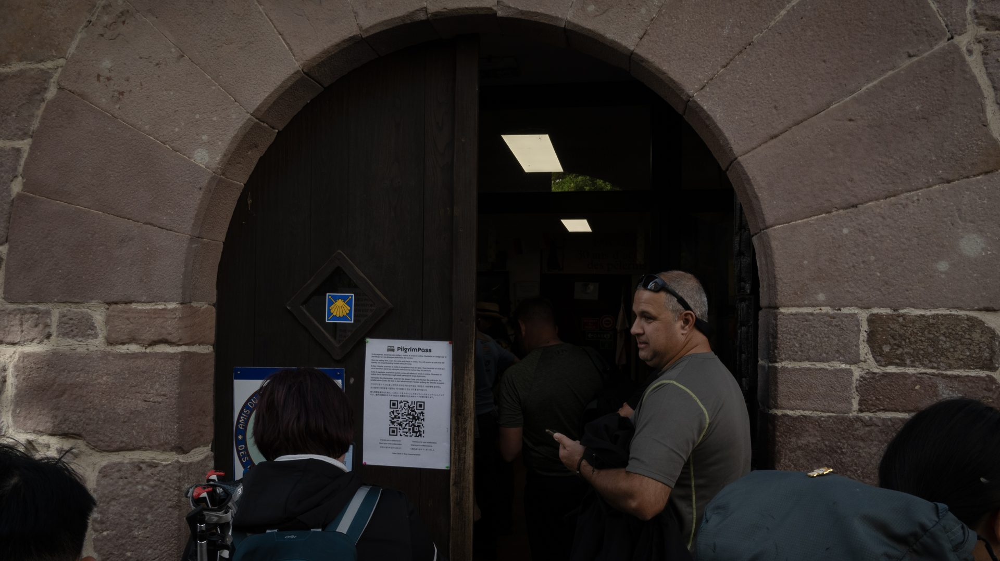
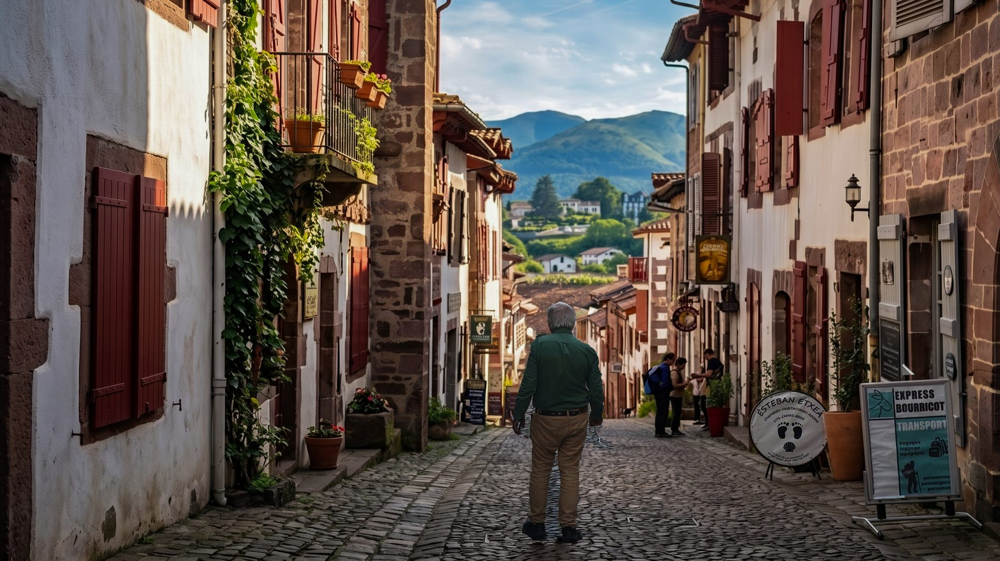
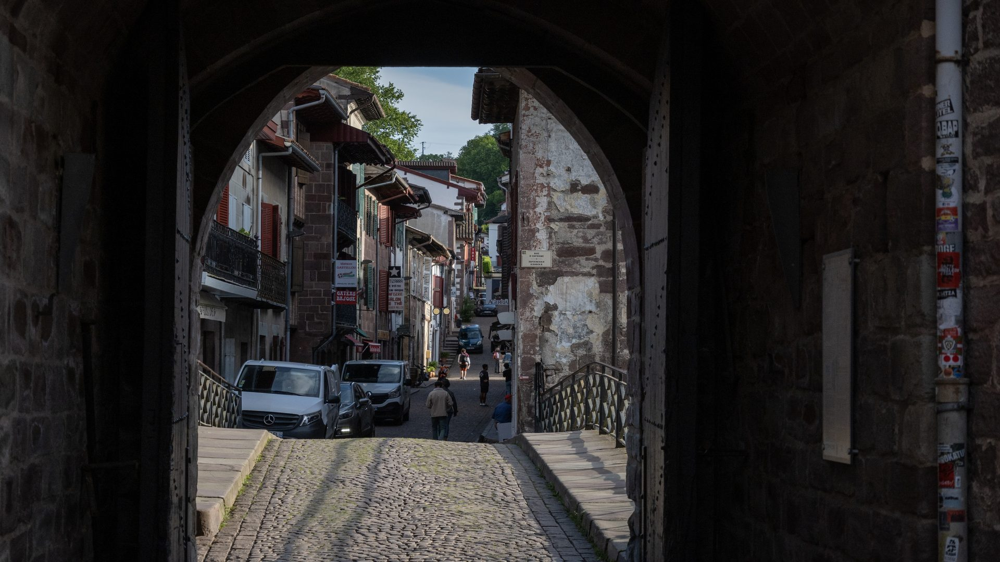

在起點安頓，迎接第一天徒步
晚上，與最後一位夥伴 Cindy 會合。我們在台灣提早訂了小鎮上的住宿，幸運的被分配到獨立的四人房間，這一晚的住宿 20 歐元很划算，小鎮上餐館就算是旺季大概七、八點後也都關了！找到了一份口感奇特、甚至有點難吃的 10 歐元投幣披薩。
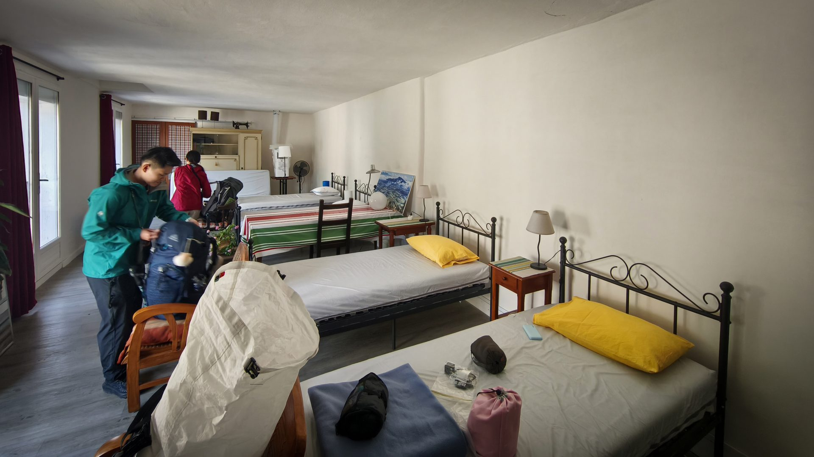
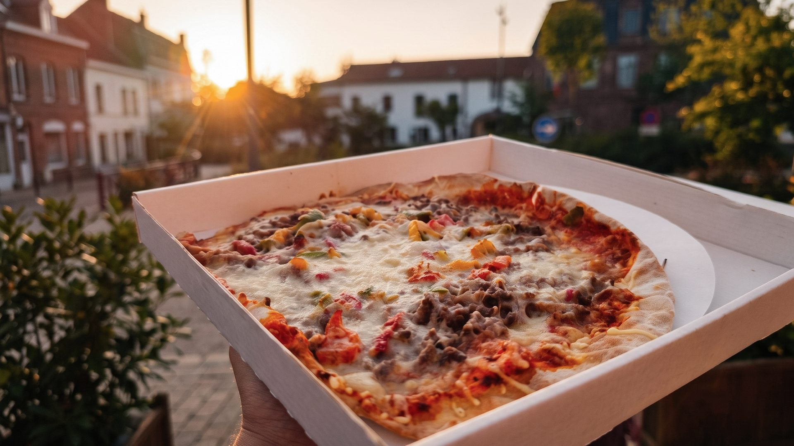
但在夕陽把古老小鎮染成金色的那個時刻，我感受到一種前所未有的平靜。
明天，就要翻越庇里牛斯山了。那是整段路最艱難的一天，但此刻，我只想安靜地享受這小鎮的陽光與風聲。
明天見。
📚 朝聖者小百科：SJPP
聖讓皮耶德波爾（Saint-Jean-Pied-de-Port） 在法文的意思是「聖約翰 - 山腳 - 口岸」。12 世紀時，這裡是納瓦拉王國在庇里牛斯山北側的軍事要塞，紅色的城牆和城堡至今仍矗立在山坡上。
17 世紀起，SJPP 成為法國之路的傳統起點。全世界的朝聖者從這裡出發，翻越庇里牛斯山，踏上 800 公里的旅程。
🍽️ 必吃：巴斯克蛋糕（Gâteau Basque）、當地起司 Ossau-Iraty
>
⚠️ 提醒：旺季（5-9月）住宿一位難求，務必提前預訂！小鎮 8 點後幾乎所有餐廳都關門。
>
🐚 朝聖者護照 €3，朝聖者辦公室可拿路線資訊與第一天注意事項。
📍 SJPP · 法國之路的門檻
🐚 朝聖者護照：入手
🛏️ Gîte BIDEAN
Buen Camino 👣
📷 補充相簿｜行李寄送紀錄
出發前整理並寄送多餘行李的紀錄，保留托運標籤與打包完成的畫面。
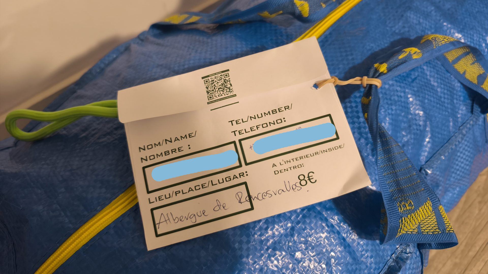
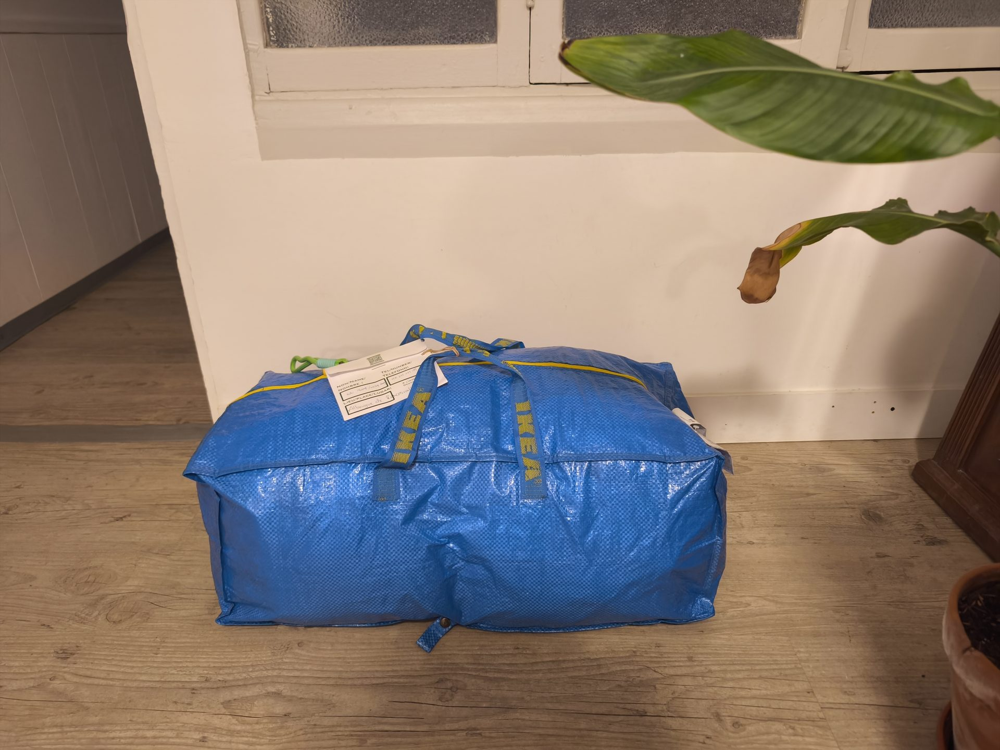
這張旅途合影無法從原始文字確定拍攝情境，因此先保留在補充相簿，不勉強配對到某一段故事。